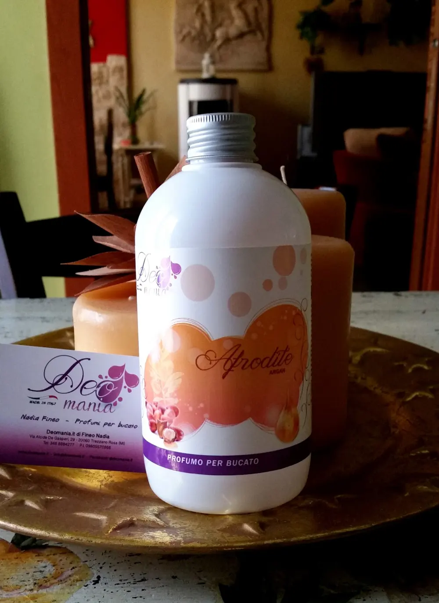
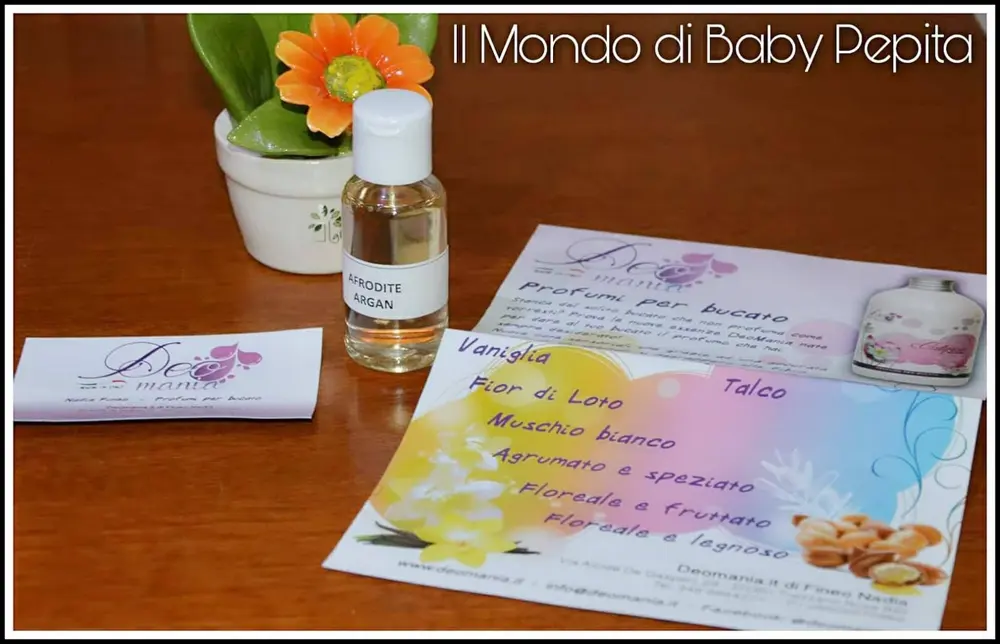
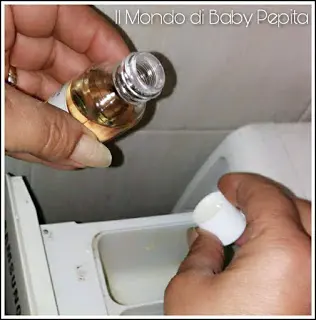
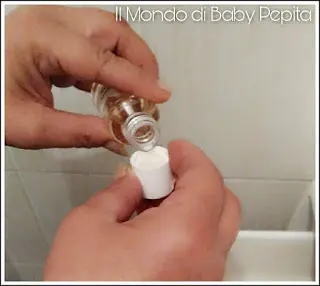
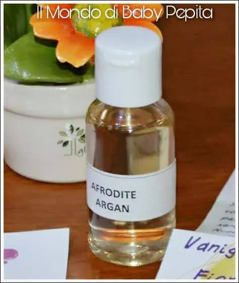

Essenza: DeoMania

Essenza: Oggi sono contenta di ospitare nel mio blog un marchio innovativo.
La DeoMania. Di cosa si tratta? Sono in effetti profumi ed essenze per ottenere un bucato profumato.
Otto diverse profumazioni tutte molto dolci e delicate, profumi di fresco e di pulito; scegliere tra le otto profumazioni è davvero difficile in quanto sono una più invitante dell'altra.
Vi elenco le fragranze:calipso,al profumo di fior di loto.Minerva con il profumo delicato del talco;Atena, che è ideato con la dolcezza della vaniglia;Afrodite, è realizzato con l'essenza di Argan;Armonia, composto falla delicatezza del muschio bianco;Artemide, la freschezza floreale e legnoso;Clio, ideato con l'idea di un giardino fiorito e fruttato di pesca e albicocca;Aurora, agrumato e speziato.
Davvero una bella linea per tutti i gusti della casalinghe. Il profumato che ho avuto il piacere di provare e testare è stato Afrodite, ovvero la fragranza delicata di Argan.

È un'essenza che può essere utilizzata sia in lavatrice, sia per il bucato a mano.

Non c'è da preoccuparsi per il tessuto poiché è adatta ad ogni tipo di tessuto. Per ogni lavaggio non c'è cosa più facile di usare 5 ml (un tappino) per un bucato di 8 - 10 kg.
(tengo a precisare che qui il tappino è quello del campione quindi di questa grandezza del tappo andrebbero messi 2-3 tappi, invece sopra parlo della grandezza del tappo del flacone che è da 500 ml quindi di conseguenza il tappo è diametralmente più grande e un tappo per un bucato di 7-10 kg va più che bene).


Può essere aggiunta con l'ammorbidente o singolarmente nello scomparto dell'ultimo risciacquo.

Un piccolo passaggio per un grande risultato, infatti donerà un profumo delicato al tuo bucato che prima d'ora non hai mai provato.
Ognuna di queste essenze possono essere anche utilizzate come profum'ambiente.
Di fatti, se diluiamo qualche goccia di essenza nel secchio per lavare il pavimento, potremo sentire un profumo per tutta la casa. Oppure ancora, diluire poche gocce in uno spruzzino di acqua per vaporizzare su tende, tappeti, divani, ecc. Noteremo che il profumo ci inebrierà fino a non riuscire più a farne a meno.
Prezzo: 15,00 € (500 ml)
Se volete acquistarlo potrete rivolgervi direttamente a me oppure visitate il sito.